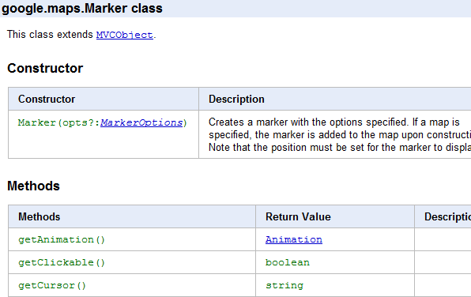
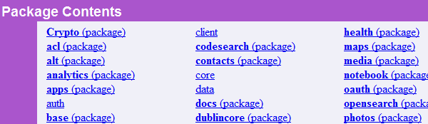
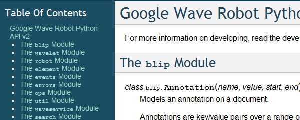
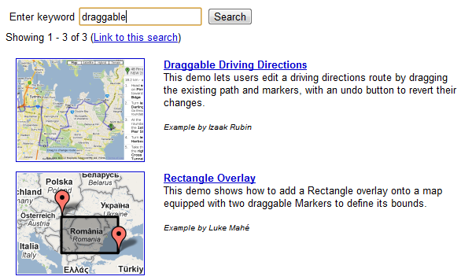
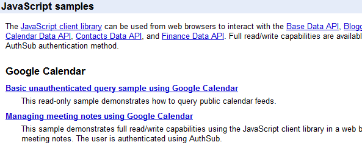
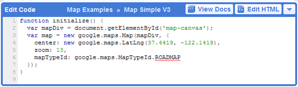
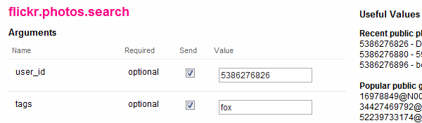
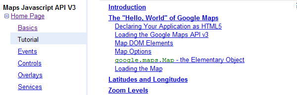

Documentation¶
You can provide the best API in the world, but if you don’t document it, the only developers that will use it are the ones that are paid to do it, or that enjoy pain. Most likely, your goal is to attract every type of developer - the hobbyists, the newbies, the freelancers, the paid employees, the student, etc. - and the goal of your documentation is to explain the API in a way that works for all of those types of developers, and all types of learners.
Some developers learn best from an API reference, some from sample code, some from a presentation, some from a conceptual guide. So, you need to provide your documentation in all those different forms, keeping them as up-to-date and in-sync with eachother as possible.
A complete documentation set should try to include the following:
- Class Reference: A comprehensive listing of API functionality.
- Changelog: A reference of what changes in each API version.
- Code Samples: A set of examples showing typical API usage.
- Code Playground: An interactive explorer for trying the API live in the browser.
- Developers Guide: A conversational written guide to using the API.
- Articles: Tutorials and screencasts discussing different ways of using the API.
Class Reference¶
If your API is not open-source, then the class reference is the absolute go-to source for showing developers what classes and methods they can use. If your API is open-source (i.e. its a non-obfuscated library of code), then this reference is a nice alternative to grepping through code and looking for methods. A reference can also be a great way to do a quick feature-check of an API - just by a quick skim of the top-level classes in an API, a developer can figure out if the API does what it wants it to do (or not).
Your basic goals for a reference is to make sure it covers everything, and is easy to search, link, and use.
Content¶
The reference should be thorough, covering every part of the API, including versioning and deprecation information.
Full Coverage¶
The reference should show every aspect of an API - events, properties, options, methods, classes, and constants. It should also include every aspect of each of those. For example, a method should have arguments, a return type, and a description. A property should have the type and the default value, if there is one.
If any side effects result from a method, they should be described. If any prerequisites are required before calling a method or using a class, they should be described. For instance, developers using the Maps API should always call setCenter() after creating a Map() and before performing other actions, and we put notice of that in both the Map() constructor and the setCenter() method. (Sidenote: A better designed API would involve no prerequisites like that.)
Versions¶
If your API has any notion of versions, and developers are able to access different versions of the API at any given time, then the reference should note the version differences in the reference. Each API object should have the version it was introduced in its description.
Ideally, a developer could also sort or filter a reference by version. They might want to see every thing that was introduced in version X, or see the most recently added objects. Another alternative to denoting versions in the reference itself is to provide different references for each versions. The downside to providing a new reference for each version is that the URLs likely change, and there may be a lot of redundant content if the API doesn’t change much across versions.
The basic idea is to convey version information in your docs in some way or the other.
Deprecation¶
If your API ever deprecates API objects, that should be very clearly shown. In addition to including a “deprecated” or “deprecated since version N” in the description, some visual distinction should be employed, like greying out the section.
Format¶
After you’ve made sure your reference covers everything, you should optimize the format to make it easy to find and reference everything.
Number of Pages¶
There is one big decision to make when figuring out the format of your reference, and that affects all of the requirements: one page or multiple pages.
The benefit of providing a one-page reference is that a developer can easily do a quick CTRL+F to jump around the reference. The downside is that the reference can grow pretty large as your API grows, which means you can’t safely sprinkle it with images or interactive items and expect it to load in a reasonable amount of time time.
If possible, you could offer both options. For the Flash Maps API, we host a single-page version online, and we distribute a multi-page traditional ASDoc format along in the SDK zip, so people can choose what they prefer. The single-page version is generated from the multi-page doc, so we can keep them in sync automatically.
Linkable¶
Every API object in your reference should be addressable by a unique URL - e.g. #map.MapOptions.draggable for a single page reference or map/MapOptions.html#draggable for a multi-page reference. The primary purpose of this is so that each API object can be referred to directly when communicating in forums, blog posts, articles, and the rest of the documentation.
In addition to being linkable, the reference needs to provide an easy way for developers to find that URL (so that they don’t have to hunt through the HTML looking for anchor tags). We accomplish that in the JS Maps API by hyperlinking the API object name. Another option would be to put a little link icon next to each API object section.
Searchable¶
A developer should be able to search through a reference and find what they want quickly. If your reference is single-page, that’s accomplished with CTRL+F (browser find). If not, then you should provide a reference-specific search box. That could be implemented using a Google Custom Search Engine scoped to the reference pages.
Downloadable¶
Surprisingly, even though its hard to develop with Web APIs while offline, there are developers out there that like to browse through references while they’re flying on a plane, tanning on a beach in Maui, etc. For those developers, you can provide a PDF version of your reference, or perhaps use HTML5 offline storage to make your reference available offline. Just always make sure that the downloadable version stays in-sync with the live version - and if that isn’t possible, then I suggest only offering the live version.
Generation¶
As you can see, there are a lot of requirements to a good reference. And really, you don’t want to have to worry about all of them each time that you update the reference after an API change. Ideally, you should generate the reference programmatically from the updated code, and the reference generator should adhere to the requirements.
JavaDoc was the first tool to make this easy, for turning Java into multi-page references, and many tools have followed suit for the other languages.
JSdoc-toolkit¶
The JsDoc Toolkit runs over JavaScript source code and generates single-page or multi-page HTML from it. It can also generate other text formats, like JSON and XML, via custom templates.
When we decided we wanted to auto-generate the Maps API v3 reference (after experiencing the pain of manually updating the reference for v2), we decided to use the toolkit, and I endeavored to customize the output for our needs.
The toolkit is great in concept, but it takes a fair amount of fiddling with, depending on how you format your JavaScript code (the Google coding conventions differ somewhat the standard), and on how much you want to customize the output.
Ironically enough, the toolkit is written in JS, but its own code contains very little comments, so it can be frustrating to debug. If you do decide to use JsDoc Toolkit and you are looking for an output similar to our one-page API references, you can download the template from our open source Maps API library.

PyDoc¶
The pydoc Python module runs over Python code and produces a multi-page format similar to JavaDoc. The result is highly linkable, but as it is multi-page, it’s harder to search. In addition, the default output is not too aesthetically pleasing.
Google currently uses this for the Google data Python client library reference.

Sphinx¶
The Sphinx tool makes it easy to create documentation for source code (or in fact, any text) that uses reStructuredText-style formatting. It was originally created to generate the documentation for the new Python documentation, so Python developers will recognize its defalt output immediately, but it is also being used to output documentation for other languages, and non-code documentation, like this handbook itself.
Sphinx allows you to mix reference information with other content, like textual explanations, so it can be a nice way to write an entire developers guide. You can use it to create one-page or multi-page references (with the tendency towards the first), and the default output looks nice and clean. Additionally, you can easily output other formats, like LaTex or PDF, by just running a different command on your source files.
If you are not already using reStructuredText for your code, it can take some time to learn the format and port the comments over, but particularly for Python APIs, it’s worth the time.
After starting with pydoc, we switched over to using Sphinx for the Wave Robots API Python library reference.

ASDoc¶
Adobe provides ASDoc to make it easier for developers to create multi-page references like the ones that they host on their site. Since ActionScript developers already use this format when they’re using core AS3 libraries, it’s a good, familiar format to choose if you’re providing your own AS3 library.
We used ASDoc to create a downloadable multi-page reference for the Flash Maps API, and we used a script to convert that into an online one-page reference othat looked more like our other APIs. We were trying to be both consistent with what Flash developers were used to, and with what Maps API developers were used to, since we expected developers to be coming from both fronts.

Changelog¶
When documenting your API, you must also document when and how your API changes. A changelog should list changes in behavior, new API objects, and deprecated API objects, with links to relevant sections of the reference or blog posts. It should also list any developer-facing bugs that were fixed, and link to an issue tracker, if the bug was tracked there.
For the Maps APIs, we post the changelogs as wiki pages in the issue tracker project. That makes it easy to link to the changed issues, and also comes with an RSS feed, so developers can subscribe to any changes in the changelog wikis if desired. (Note: You should be also posting about changes to an announcements list).
Other Google APIs post their changelogs as pages in the documentation, such as the Google Analytics Data Export API and Google Sites API.

Code Samples¶
It is great to explain the concepts behind an API and list all its objects in a reference, but when it comes down to actually using the API, nothing beats sample code. If a developer can see a bit of code, and know that the code works to produce the desired result, then they can immediately plug that into their code and modify as needed.
Now, unfortunately, there are some developers that are very good at copying-and-pasting sample code word-for-word, and are useless to do anything with it after - and basically ask developers in the forum to write the rest of the code for them. So, there is a danger to having good sample code – attracting developers that don’t bother to actually learn the API – but the benefits outweigh the risk.
Good sample code should demonstrate actual (non-theoretical) uses of the API, should be commented, should be licensed appropriately (e.g. Apache). It should be runnable - developers should be able to prove that it works, before using it themselves. It be linkable and searchable, like the rest of the documentation. And, if you really want to be able to scale up your repository of code samples, you should have a way of showcasing samples created by external developers.
We have a couple different ways of showcasing code samples across Google APIs.
The Maps API demo gallery is a single page that uses JavaScript to pull data from a published Google Spreadsheet and lets developers search and browse through the demos.
It is linkable and searchable, but since it’s entirely AJAX-driven, it is not indexed by web spiders. This means that developers need to know that the demo gallery exists before they can search for demos that answer their questions. Based on the number of times that I responded to forum posts with a quick search in the gallery, my conclusion is that most developers do not know that it exists or think to look there.
Another drawback to this format is that a Googler must enter in the information about each sample, which takes a certain amount of time and means that the gallery does not easily scale to many samples.

The Wave Samples Gallery is an App Engine app (and open-sourced). Any developer can sign in, and fill out a form to submit a sample. That goes into a moderation queue, and a group of moderators is sent an email. We check it out, and with just a click of a button, we can approve it for display in the gallery. Then, each sample has its own page, and each author has its own page, and the whole app is fully indexable by web spiders (and that indexing is enhanced by a generated robots.txt).
One tricky issue is searchability within the app itself, as App Engine does not yet enable full-text search over the datastore by default. To workaround this, the app offers the ability to filter by tags, and then embeds a Google custom search widget for full-text search.
This approach meant that we could grow from a small number of samples to a large number quite easily (and given the initial excitement over the Wave APIs, that’s what ended up happening). However, that growability has its drawbacks. First, it can be hard to decide what actually belongs in the gallery, and what to reject. A particular sample may not show off something that is interesting to you, but it may be interesting to someone else out there. Second, when you’ve grown your samples gallery substantially, it becomes harder for developers to find the quintessential samples – the simple ones that are the easiest for them to get started with. To help remedy that, we added “Best Practices” and “By Googler” filters to the samples gallery, but it is not a perfect solution.

Some APIs, like the Google Data APIs, simply include a single-page list of Googler-created samples. This can work for a simple API with a smaller number of use cases or developers.

When figuring out what format to use for your API, consider carefully whether developers would benefit more from a short curated list or from a diverse range of examples, and in all cases, ensure your solution is searchable and linkable.
Code Playground¶
It can sometimes be a lot of work for a developer to setup an environment to start using a particular API – sometimes, it’s so much work that they don’t ever do it. If a developer can start playing with API code live on your site, without any setup at all, and see what the code results in, then they’re more likely to get excited about an API and put in the effort to start using it. That’s why interactive code playgrounds are a nice complement to documentation.
Depending on whether you have a client-side, server-side, or HTTP API, the playground come in different forms. For the AJAX APIs, including the Maps API and nearly 20 other APIs, we provide the Google Code Playground. Using this playground, the developer can choose a particular sample from the left hand-side, preview the result of the code, edit the code, and save or export when they’re done. That way, they can get started in the playground and migrate to their own environment when they’re ready, with very little work. This playground runs on App Engine, and the code is open-sourced in the google-ajax-examples repository, so that other APIs can re-use it for their own purposes – like Google’s own HTML5 playground or the non-Google Mapstraction playground.

For some of the Google data APIs, which are HTTP-based, Google offers several interactive apps for interacting with the protocol. The OAuth playground makes it easy to retrieve an authentication token for a particular API, and then do GET or POST requests on particular URLs. This playground both aids developers in previewing API results before writing their own code, and in debugging the OAuth flow in their own application, which can be tricky. That playground is open-sourced in the gdata-samples repository, and could be reused by other OAuth-based API offerings.

One of my favorite non-Google playground offerings is the Flickr API explorer, which wraps on top of their XML-RPC APIs, letting you specify all the different parameters and previewing the resulting XML in the browser. As a bonus, it even provides developers with suggested values for the parameters, based on their own photosets. Whenever I’m using the Flickr API and wondering if I can do something or how I can do it, I always hit up that Flickr API explorer first.

Playgrounds serve many purposes - they are great ways to get developers hooked, they make it easier to test and debug an API, and they are also fantastic devices for teaching and demonstrating APIs. Regardless of the reason you pick, they’re a great addition to any set of documentation.
Developers Guide¶
A developer’s guide is a walkthrough of how to use the API - it’s like how a teacher would explain the API to their students, but it’s penned down in digital ink (and there’s no talking back!). Some of those students will be new to the API, some will be new to web development entirely, and some will be old pros - the guide should work for all of them.
At the minimum, a guide should demonstrate how to get started using the API, bringing the developer from zero knowledge to a working piece of code. If they can get to that minimal working piece of code, then they will feel much more motivated to continue exploring the API using just the reference.
If possible, a guide can walk through all of the aspects of using the API, for the developers that learn the best through the instructional format.

The Maps API Developer’s Guide is an example of a comprehensive guide. For every aspect of the API, there is a corresponding page in the guide that describes how that part of the API works. On the opposite end of the spectrum, the Flickr API provides only a few paragraphs about how their HTTP API works, and then sends you off to the API explorer to actually start using it. A comprehensive guide is likely more necessary for a JavaScript API than for an HTTP API, since a JS API can vary in how the different parts of it are used, whereas an HTTP API is typically the same request/response pattern for every action. (Note that Flickr does provide additional documentation on user authentication, a topic that is not as straightforward as HTTP requests.
Regardless of length, the guide should link to other aspects of the documentation - the reference, the samples, the playground, the articles - so that developers understand that those resources exist, and will hopefully explore them independently in the future.
Articles¶
While a developer’s guide should walk a developer through the basic usage of an API and its functionality, it can’t cover every possible use of that API in a coherent way. That is where articles and tutorials come in, to teach developers tangential or specialized uses of an API, like combining it with another service, framework, or API.
For example, the most popular articles that I ever wrote for the Maps API were about combining it with PHP & MySQL. I started with a basic article on rendering markers from a database on a map, and after I saw the number of developers reading that article (both from the analytics and forum posts), I started writing related articles, and linking them back and forth to eachother to form a pseudo-series.
Articles vary in form - some are like tutorials that step you from beginning to a final output (like the PHP/MySQL tutorial), some are a collection of tips, like Debugging Wave Robots, and some can be screencasts visually demonstrating a process, like Using Debugging Tools with the Maps API.

Each of those formats appeal to a different developer and work for different content, and it’s a good thing to experiment with the different formats and see what works for your audience and API.
If you’re lucky, you will see many external developers writing their own articles and tutorials. If you can, you should try to collect links to those articles, and provide them from your own documentation (denoting that they’re non-official). It’s good for the authors because it gives them more traffic to their site, making them feel appreciated and more likely to write more, and it’s good for developers because it gives them additional resources to explore, written from different viewpoints. To manage this, I typically bookmark any external article I see from my alerts or twitter streams, and once a month, add them to our articles page and blog about them.
According to my analytics on our API documentation sites, developers are less likely to visit the articles section than the main developer’s guide, maybe because they assume they’ll find their answers in the “main” documentation. To increase the chance of a developer encountering an article, I recommend sprinkling the documentation with links to relevant articles, where it makes sense.
Table Of Contents
Search
Enter search terms or a module, class or function name.
Other Formats

You can purchase a print copy or download a PDF at Lulu.com.
You can also checkout the source files from Github.